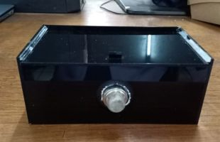

Alat Pendeteksi Gas
Alat pendeteksi kebocoran gas yang menggunakan komponen utama yaitu sensor MQ-2, NodemCU ESP8266, buzzer, dan LED berbasis Blynk adalah sebuah sistem yang dirancang untuk mendeteksi kebocoran gas metana di lingkungan sekitar seperti rumah, restoran, industri dan lainnya.
Sensor MQ-2 digunakan untuk mendeteksi gas metana dengan sensitivitas yang tinggi hingga konsentrasi 500 ppm. NodemCU ESP8266 berfungsi sebagai platform untuk mengolah data dari sensor dan mengirimkan informasi ke aplikasi Blynk melalui jaringan WiFi. Buzzer yang berbunyi dan LED yang menyala dapat digunakan sebagai indikator alarm yang akan memberikan tanda ketika terjadi kebocoran gas metana

Aplikasi Blynk memungkinkan pengguna untuk memantau dan mengontrol sistem secara real-time melalui perangkat mobile. Ketika konversi gas metana mencapai threshold tertentu, buzzer akan memproduksi suara alarm dan LED akan menyala, memberikan informasi langsung tentang keadaan gas metana di lingkungan sekitar.
Dengan teknologi IoT yang diterapkan pada sistem ini, pendeteksian kebocoran gas menjadi lebih cepat, akurat, dan mudah dioperasikan. Sistem ini sangat berguna untuk mencegah kecelakaan yang disebabkan oleh kebocoran gas metana di lingkungan sekitar.